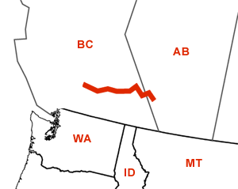

Day Thirty-Six
Kamloops, BC - Canmore, AB
Date: 07/16/2002
Distance: 353 miles
Weather: Sunny 80 to mid 90's
This morning we went back to the West Rock Bakery to sample their breakfast selection. We also looked for a dog park we heard about, but were unable to find it.
We stopped for lunch at a Canadian grocery store, and ate at a riverside park near the highway. We drove on through the Rocky Mountains for the rest of the afternoon. The mountains are so high and mighty, and at times we could not see to the top! We stopped a few times to admire the views, but did our best to cover a good amount of distance.
We did, however, stop at the Alberta welcome center for awhile. This welcome center rivals the Texan giant one, only because it was so scenic, and had a clear blue pond filled with glacial waters. There were people swimming, and after a game of fetch Ogden took a dip too. She has become quite the little swimmer! At the rest stop we met another New Jersey liscense plate, a musician playing at a musical festival in Calgary. (We did ascertain that his girlfriend was from the town Corin grew up in, but we forgot to ask him if he was famous. Opps.)
We exited the Rockies, and stopped in the tourist/ski town of Bamff. Bamf was two busy streets of shops and restaurants, and we stopped there for dinner. We wandered a bit, and then hurried off to camp for the night. We stopped at the first provincial park we came to. But, the sacrifice of last minute camping is sometimes listening to the lulling sound of interstate all night. (Not to mention mosquitos the size of small birds. We were unable to take a picture because they stole the camera.) Oh well, that just means an early start for tomorrow!